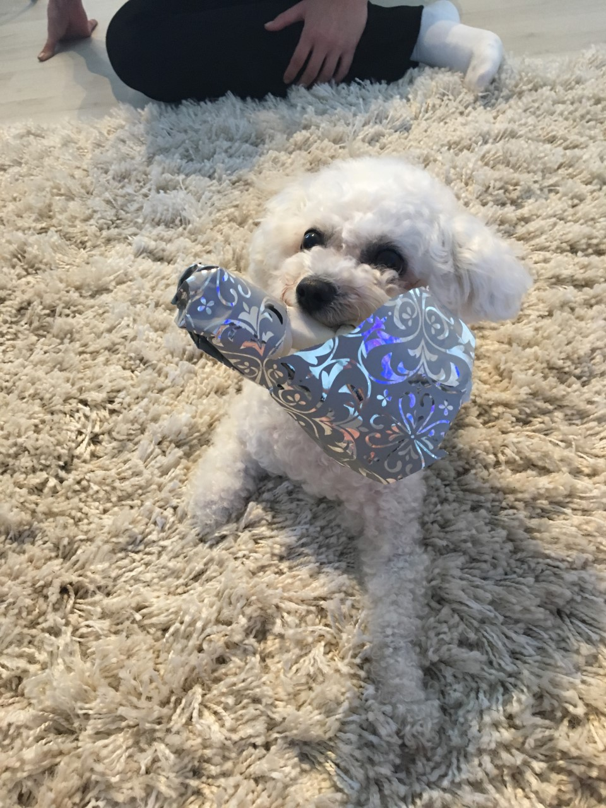
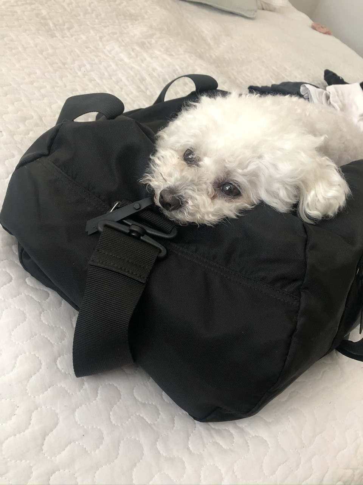

Bichon frisé
Bichon frisé on pieni valkoinen seurakoira.
Bichon frisé on ranskalais-belgialainen koirarotu, jonka pääasiallinen käyttötarkoitus on seurakoirana oleminen. Bichonin luonnetta kuvaillaan iloiseksi, herkäksi, leikkisäksi ja ihmisystävälliseksi. Mutta bichoneita on myös kuvailtu itsenäisiksi, reippaiksi ja tyhmänrohkeiksi. Bichon ei saisi olla arka eikä ujosteleva, mutta arkuutta esiintyy rodussa jonkin verran.
 Bichon frisén maksimisäkäkorkeus on sekä uroksella että nartulla 30cm rotumääritelmän mukaan. Ruumiinrakenteen on oltava vankka ja sopusuhtainen. Nenän on oltava musta ja kiiltävä sekä silmien tulee olla aina pyöreät. Bichonin karva on 7-10cm mittaista, silkkimäistä kiharaa joka menee korkkiruuvimaiseen tapaan kiharalle. Bichon on siis trimmattava rotu ja turkin hoito onkin melko vaativaa. Koiraa täytyy kammata säännöllisesti estääkseen turkin takkuuntumisen ja huopaantumisen. Turkin tulee olla yksivärisen valkoinen.
Bichon frisé haluaa viettää aikaa oman perheensä kanssa. Rotu on vilkas ja saattaa olla itsepäinen, joten omistajan täytyy kouluttaa pentua johdonmukaisesti alusta asti. Bichonit ovat älykkäitä, ja oppivat oikealla opetuksella käskyjä nopeastikin. Useimmilla bichoneilla on vahva itsetunto ja voimakas oma tahto, joten omistajalta vaaditaan paljon kärsivällisyyttä, päättäväisyyttä ja huumorintajua. Johdonmukaisuus ja selkeys ovat avainsanoja. Parhaiten bichonit oppivat leikin ja palkitsemisen avulla.
Bichonit elävät keskimäärin 12-15-vuotiaaksi, ja säilyttävät leikkisän luonteensa vanhuusikään asti. Bichoneillakin löytyy perinnöllisiä sairauksia ja periytyviä vikoja. Rodulla esiintyviä sairauksia ovat mm: allergiat, harmaakaihi, reisiluun pään aseptinen kuolio, polvilumpion sijoiltaanmeno ja virtsakivet. Näiden lisäksi esiintyy napatyrää, kivesvikoja, purentavikoja ja häntämutkia. Silmävuoto on ns. tavallinen vaiva, joka voi johtua monesta eri syystä.